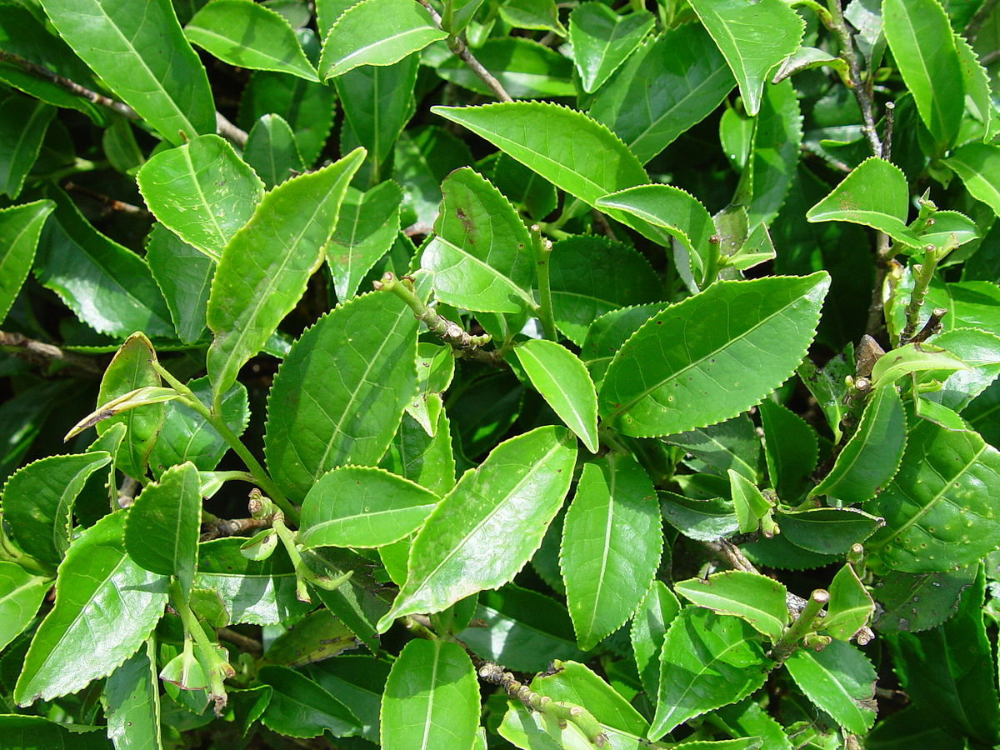

'차'하면 무엇이 떠오르나요? 선지 중에서 '차'를 모두 골라보세요! 코코아 홍차 옥수수수염차 유자차 우롱차 정답을 확인해볼까요? 엄밀한 의미에서는 앞 예시들 중 홍차와 우롱차를 제외하고는 ‘차’라고 말할 수 없어요! 왜냐하면 엄격한 의미에서의 차는 ‘차나무의 잎으로 우린 음료’를 가리키는 말이기 때문이에요.  차는 가공 방법에 따라 크게 6가지 종류로 구분돼요. 백차, 녹차, 황차, 홍차, 청차, 흑차가 있습니다. 답 중 하나였던 우롱차는 청차의 다른 이름이에요!